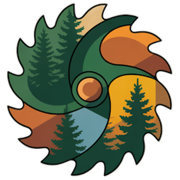
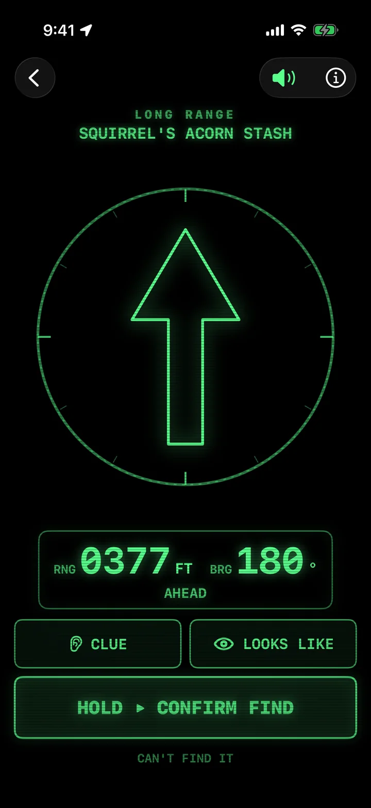
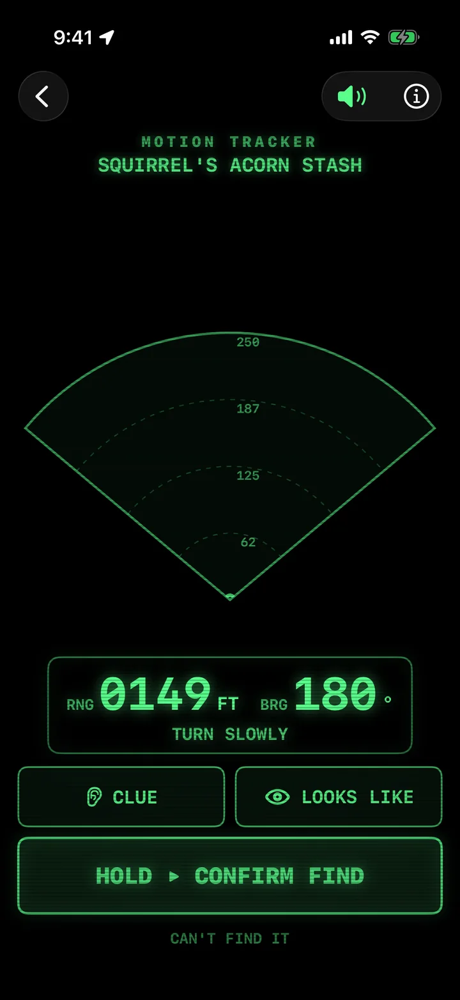
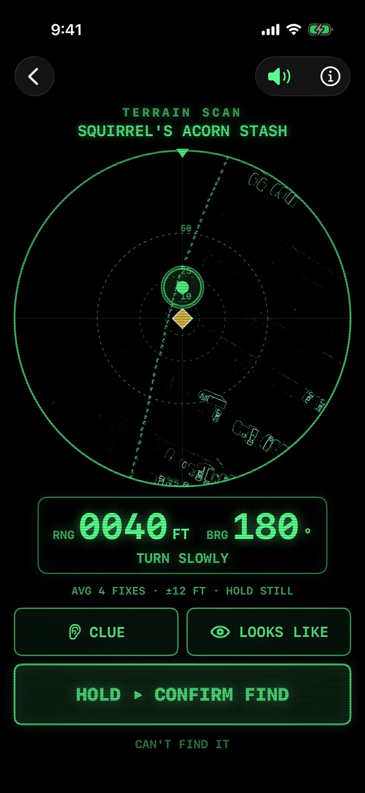
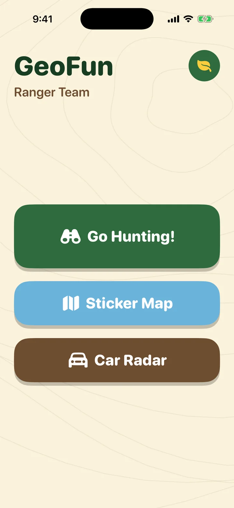
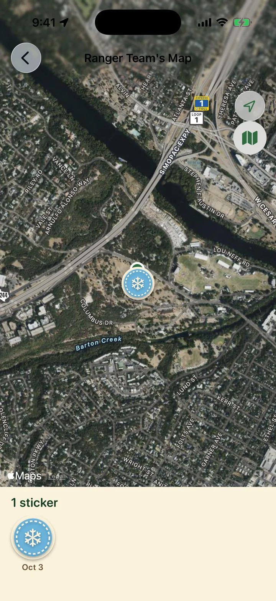
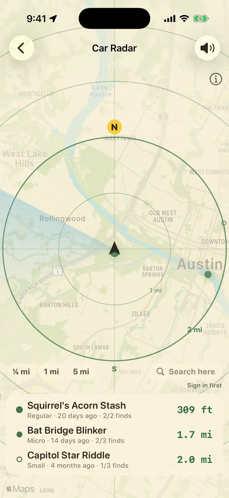

SoftwareGeoRangers
Every geocaching app is built for the adult doing the caching. GeoRangers is built for the kid who wants to hold the phone.
Hand a kid the phone. It pings faster as they get closer, buzzes when they point it the right way, counts the feet down, and reads the clue out loud in words they know. When GPS runs out of precision, it says so and shows them where to look. When they find the box, they take the picture and earn a sticker on their adventure map.
Two looks, one hunt
A grown-up picks the look in settings. Ranger is for the little one: paper, big yellow arrow, a friendly voice. Tracker is for the big one who has outgrown chimes: black and green, one blip, range and bearing, nothing announced. Underneath they are the same hunt.
Ranger
The arrow gets them close. Inside a hundred feet it shrinks onto a satellite map, and their own dot takes over.


Tracker
Black and green from the list tap to the find. One blip, faster and higher as they close in.



Around the hunt




Built for small hands
- The clue is rewritten for kids. “Find the biggest oak tree you can see. Look at the bottom where flat stones are.”
- It talks. The clue, the countdown, the cheer. A real voice, not a robot.
- Finding is a hold, not a tap. A grown-up is beside them; the phone just makes sure.
- A Brave Try sticker when they can’t find it, so a DNF is still a good day.
- Honest about GPS. The averaging ring shows how sure the phone is, and it stops pointing when it can’t know.
Built for grown-ups to trust
- Every grown-up function and every link out of the app sits behind a multiplication problem.
- No child accounts. The parent signs in. The kid never touches geocaching.com.
- No ads, no analytics, no third-party anything. Photos never leave the app.
- Kid guidance locks above walking speed. In the car, only the driver gets directions.
- One setting for the look. Ranger or Tracker, chosen by the grown-up, so the kid never changes modes mid-hunt.
Where it stands. A public preview of an app in field test, for families with children around four to eight. It imports GPX pocket queries today, and we are applying to the Geocaching API partner program so a parent can search and fetch hints in the app. Hints need a Geocaching Premium membership, so GeoRangers is a Premium household’s app.
On TestFlight now; App Store soon. GeoRangers is not affiliated with Geocaching HQ. Privacy policy.